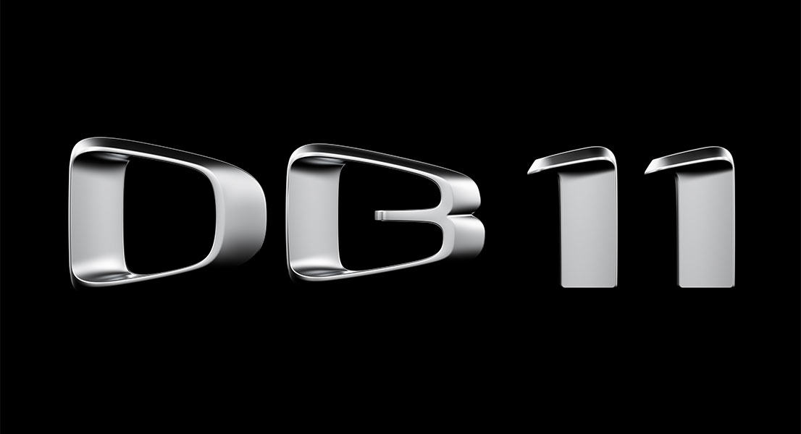
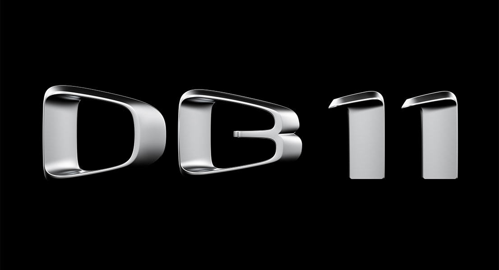

Aston Martin

Historia
1913-1920
Nace el icono
Fundada en 1913 por Robert Bamford y Lionel Martin como “Bamford & Martin Limited”, la compañía se ha convertido en una marca icónica en lujo y elegancia. 1914 vio el nacimiento de la denominación Aston Martin gracias al éxito de Lionel Martin en el Aston Hill Climb en Buckinghamshire (Reino Unido). Un año más tarde, el primer vehículo es construido y registrado con el nombre Aston Martin y, en 1920, el negocio empieza a operar en la ciudad de Kensington.

MODELOS
MODERNOS
 

El Aston Martin DB11 es el modelo medio de Aston Martin, un Gran Turismo de altas prestaciones, heredero del mítico Aston Martin DB9 que tantas alegrías le dio al fabricante británico. Se comercializa su primera generación, la cual salió al mercado en 2016. Comparte chasis con el Aston Martin DBS Superleggera, una versión más deportiva y exclusiva que emplea gran parte de los elementos de carrocería y otros componentes base.
Especificaciones
- > Motor: V12 a 60º AE31 Biturbo de 5.2 litros
- > Potencia: 503 a 630 HP (510 a 639 CV)
- > Par motor: 675 a 700 N·m
- > Transmisión: Automática ZF de 8 marchas
- > Velocidad máxima: 335 km/h (208 mph)
El Aston Martin Vulcan es algo más que un deportivo. Es un coche de carreras, pero no está pensado para la competición. Es un deportivo de tecnología puntera, 800 CV de potencia, un doce cilindros en uve de 7.0 litros y la exclusividad de una bestia de la que solo se construirán 24 unidades.
Especificaciones
- > Motor: V12 AMR de 7 litros
- > Potencia: +800 HP (+789 CV)
- > Par motor: +780 N·m
- > Transmisión: Secuencial de 6 velocidades Xtrac
- > Velocidad máxima: +322 km/h (+200 mph)
El Aston Martin DBX es el primer SUV fabricado por Aston Martin. Se trata de un automóvil de corte deportivo, pero de planteamiento crossover que cuenta con una carrocería de 5 puertas con capacidad para 4 o 5 pasajeros en función de la configuración escogida. Hablamos por lo tanto del modelo más polivalente jamás fabricado por Aston Martin, un coche que ofrecerá grandes posibilidades en habitabilidad y espacio de carga.
Especificaciones
- > Motor: V8 M177 Biturbo de 4 litros
- > Potencia: 542 HP (550 CV)
- > Par motor: 700 N·m
- > Transmisión: Automática de 9 marchas
- > Velocidad máxima: 291 km/h (181 mph)
El Aston Martin DBS Superleggera es la versión más deportiva y exclusiva desarrollada sobre la base del Aston Martin DB11. A pesar de compartir con el DB11 chasis, elementos de su carrocería y otros componentes, el DBS Superleggera ofrecer una visión más deportiva y radical para distanciarse del carácter GT del Aston Martin DB11, lo que le permite ubicarse un peldaño por encima en prestaciones y enfoque.
- > Motor: V12 AE31 de 5,2 litros
- > Potencia: 715 HP (725 CV)
- > Par motor: +900 N·m
- > Transmisión: Automática ZF de ocho velocidades
- > Velocidad máxima: 340 km/h (211 mph)
CLÁSICOS

Aston Martin V8 Vantage '77
El V8 es el heredero de la saga de los DB, agotada a fines de los ’60 tras varias evoluciones tanto mecánicas como de diseño. Había que renovarse, y Aston Martin contaba con las ideas de William Towns. De su lápiz fue saliendo un diseño compacto que integra los pasos de rueda en el cuerpo principal de la carrocería, logrando un conjunto más “musculoso” y con menos líneas curvas; un estilo que terminaría siendo símbolo de los ’70 para la mayoría de las marcas.
Especificaciones.
- > Motor: V8 de 5.3 litros
- > Potencia: 325 HP (320 CV)
- > Par motor: 550 N·m
- > Transmisión: Manual de 5 velocidades/li>
- > Velocidad máxima: 260 km/h (162 mph)

Aston Martin DB4 GT Zagato
El Aston Martin Zagato DB4GT forma parte de uno de los pilares más valiosos de las grandes colecciones del mundo del automovilismo , nació en 1960 cuando el entonces propietario de la Aston Martín ,David Brown encarga al diseñador Gianni Zagato el diseño. El Aston Martin Zagato DB4GT se presentó en el Salón de Earls Court de Londres en 1960, del que se construyeron 20 unidades entre 1960 y 1963.
Especificaciones.
- > Motor: 6 cilindros en linea de 3.7 litros
- > Potencia: 323 HP (318 CV)
- > Par motor: 325 N·m
- > Transmisión: Manual de 4 velocidades/li>
- > Velocidad máxima: 246 km/h (153 mph)